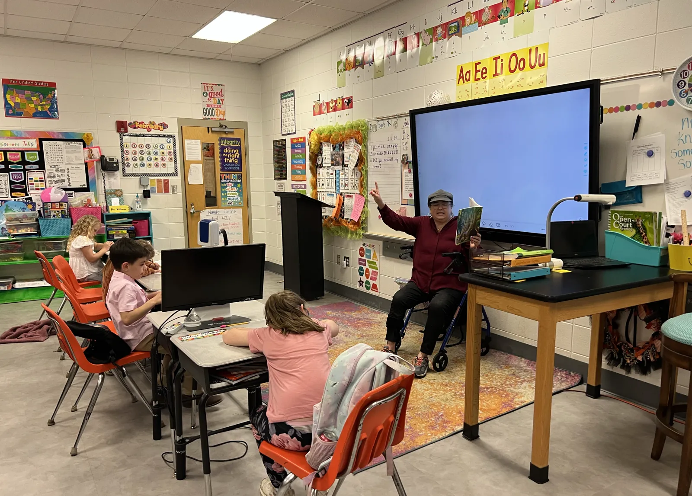
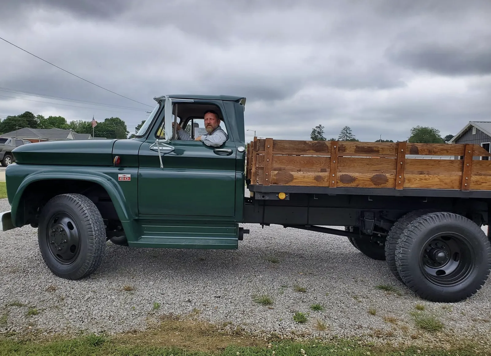

ABOUT ARLEY WOMEN’S CLUB · EST. 1972
Good neighbors.
Lasting difference.
We are women who care about Arley—and believe that caring becomes meaningful when we put it into action.
Since 1972, the Arley Women’s Club has brought neighbors together to strengthen our town and the surrounding community. Through friendship, volunteering and local giving, we help the places and people we love flourish.
Meet our missionOUR MISSION
Make our community
a better place to call home.
We support the Arley Public Library, invest in local schools and care for our parks and shared spaces. Together, we turn community needs into practical help and create opportunities for our neighbors to learn, connect and thrive.
WHERE THAT CARE TAKES ROOT
Local needs.
Hands-on heart.
Our work grows from listening to our neighbors and showing up where we can make a difference.

01 Community care +
From roadside cleanups to support for first responders, local organizations and youth groups, we help meet needs close to home. We work alongside neighbors and community partners to keep Arley welcoming, connected and cared for.
Traditions such as Arley Day bring people together—and help turn a day of celebration into lasting local impact.
02 Education & opportunity +
We support Meek Elementary and Meek High School through fundraising, volunteer help and encouragement for students and teachers. Scholarships help graduating seniors continue their education through college or vocational training.
Our support for the Winston County Arts Council also helps bring art, music and drama into local classrooms.
03 Hamner Park +
Hamner Park is a place to walk, play, gather and pause. In 2014, the club adopted the park as a major project, working with the Hamner family and the Town of Arley to renew its walking trail and wooded spaces.
Benches, picnic areas, a rustic gazebo and wetland education reflect a shared commitment to making the park a welcoming place for residents and visitors.
04 Arley Public Library +
The library is part of our story—and a lasting investment in Arley’s future. With help from residents, the Town Council, public funding and grants, the club helped build the library that opened in 2005.
Today, we continue encouraging library use and the joy of reading. It is a place for learning, discovery and connection across generations.
WORKING AS A TEAM
Many women.
One shared purpose.
Our members bring different experiences, interests and talents. What connects us is a willingness to lend a hand, build friendships and leave our community a little better than we found it.
Whether you love books, care about education, enjoy the outdoors or simply want to help, there is meaningful work we can do together.
See the heart behind our new design
GROW SOMETHING GOOD
There is a place for you here.
A little time. A shared idea. A willingness to help. That is where community begins.
Join AWC